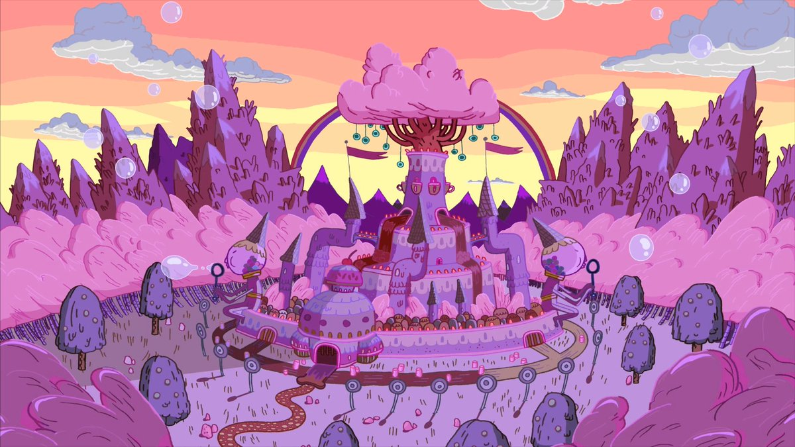

For more information, please read the book of Enchiridion

The Candy Kingdom is a post-war state located within the Land of Ooo. It is entirely made up of candy and is primarily inhabited by the Candy People. The kingdom was founded by Princess Bubblegum hundreds of years before the events of Adventure Time and it was under her reign for a long time. She did lose the election to King of Ooo. She would eventually reclaim her throne after King of Ooo is rebelled against by the Candy People. The kingdom is one of the largest civilizations in Ooo as it is well-developed and even has interests in the affairs of the other kingdoms. Princess Bubblegum refers to the kingdom as an "eternal empire." The Candy Castle is the largest building in the kingdom and the palace where Princess Bubblegum resided until losing the election, along with a few other Candy People. In one of their shows, it reveals that the walls and castle of the kingdom seems to be made of cake. The frosting and decorative sweets were likely applied later on to make the kingdom appear more like confectionery.


Please also visit Lady Unicorn's house, Just kindly follow the rainbow river
FOR SCHOOL PURPOSES ONLY